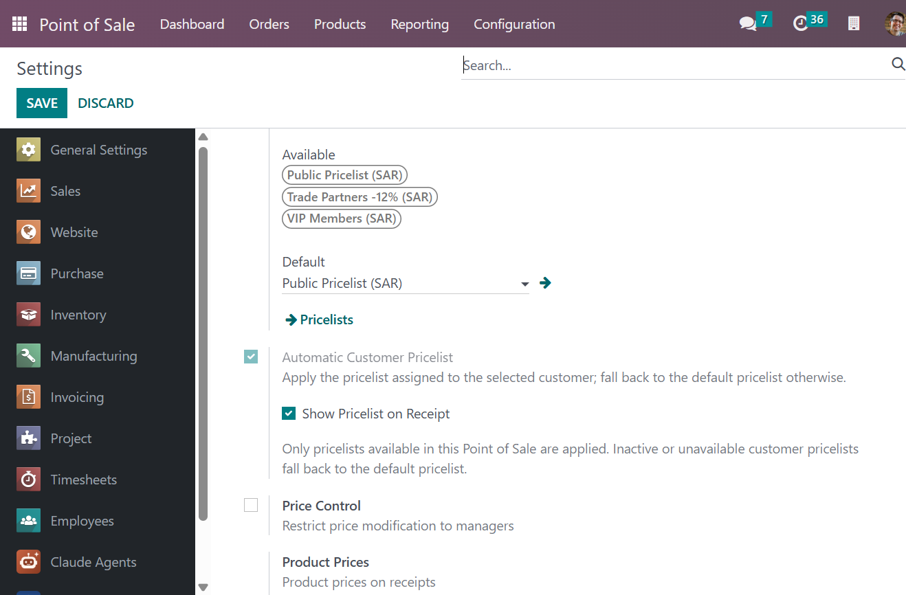
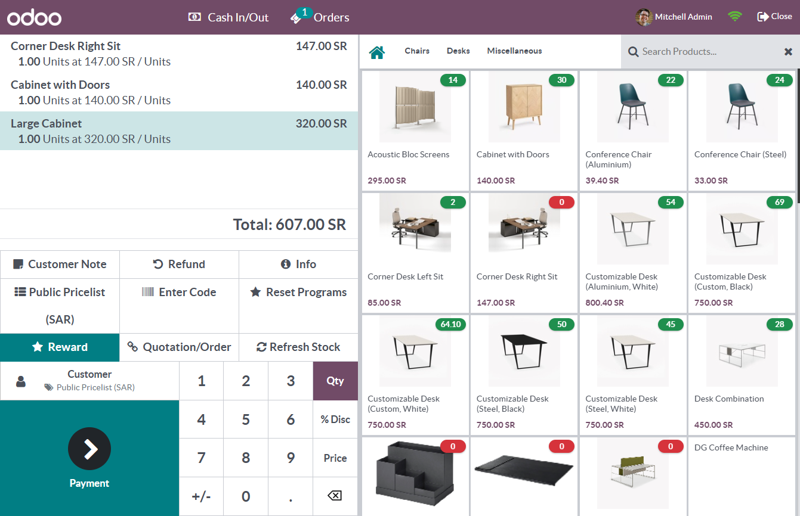
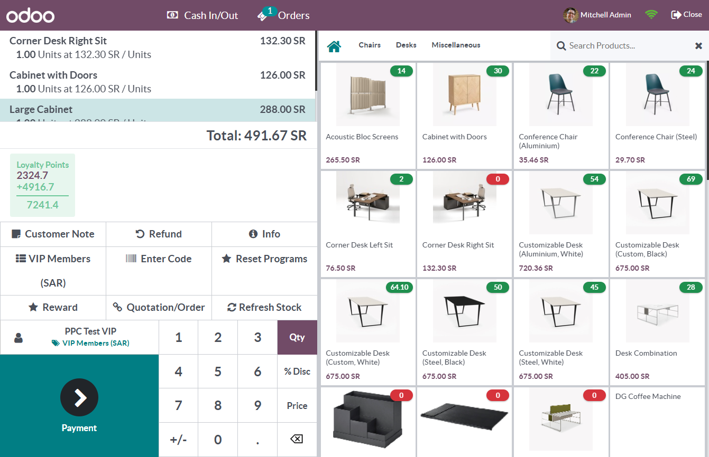
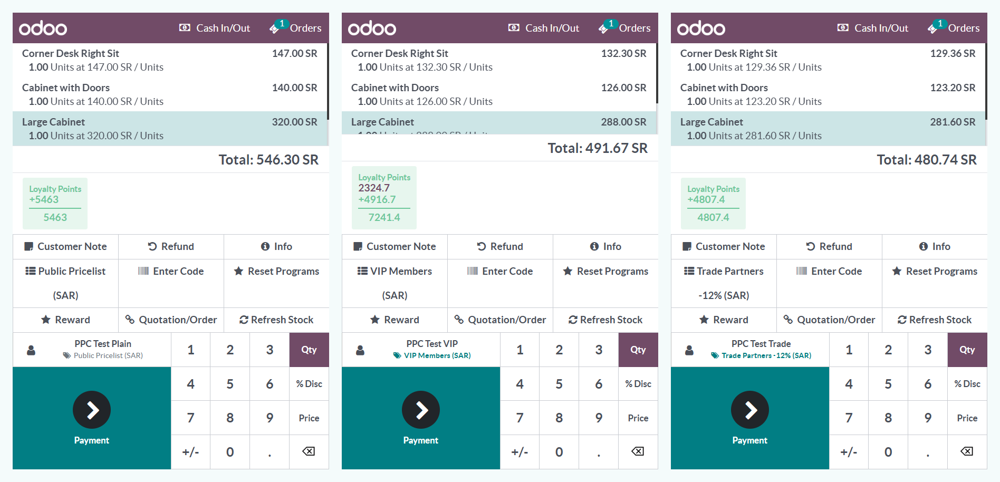
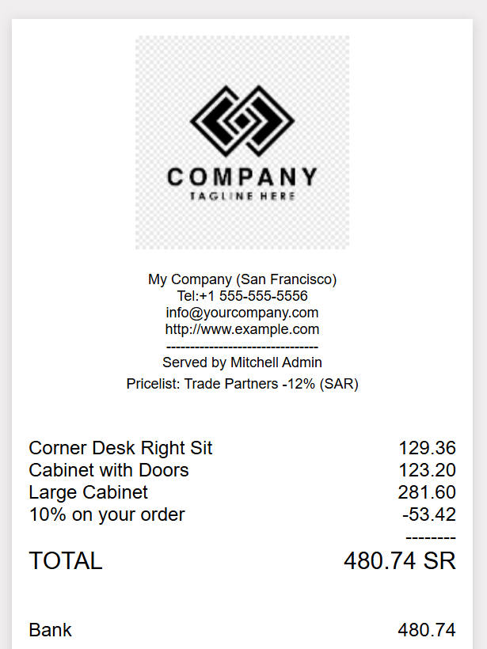
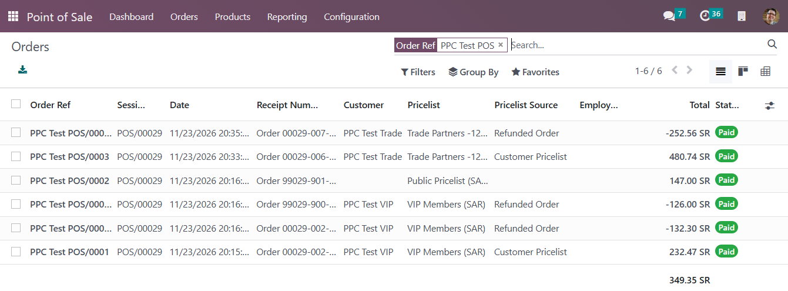
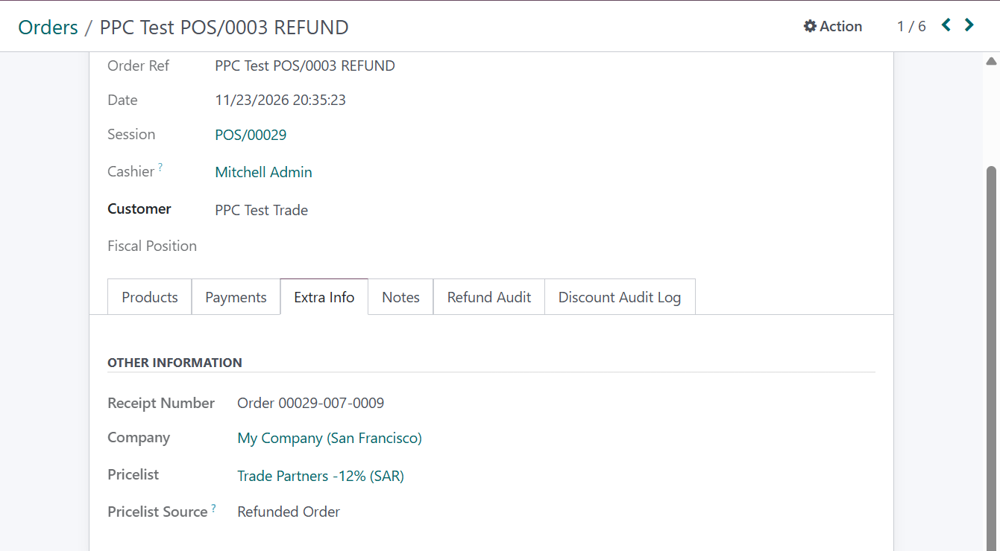

Select a customer and the Point of Sale applies the pricelist you assigned to them. If they have none, it uses the default pricelist. Refunds keep the pricelist of the original sale, and every order records which pricelist was used and why.
Standard Odoo 18 already switches pricelists when a customer is selected, but you can’t control it per Point of Sale. It also uses a fallback that applies pricelists you never assigned, and refunds can end up priced on the wrong pricelist.
Four steps, using standard Odoo pricelists.
The screenshots come from an Odoo 16 database with prices in SAR. The POS has three pricelists: Public Pricelist (default), VIP Members (−10%) and Trade Partners −12%, plus a 10% order promotion.
Automatic Customer Pricelist sits next to the POS pricelist settings. Enable it on the shops that should price by customer and leave it off elsewhere. Show Pricelist on Receipt is on by default. Like the other pricelist settings, it is locked while a session is open.

A new order without a customer uses the default pricelist of the Point of Sale. The pricelist in use is shown right under Customer, so the cashier always knows what the prices are based on.

Selecting PPC Test VIP applies VIP Members straight away. The order lines, the product grid and the promotion are all recalculated, and the pricelist under the customer turns teal to show it is the customer’s own. This works from the customer list, the payment screen and a customer barcode scan.

The same three products for a customer with no assigned pricelist, a VIP customer and a trade customer. Standard Odoo would give the first customer the fallback Default SAR pricelist. This module keeps the POS default.

| Situation | Pricelist applied |
|---|---|
| No customer, or customer removed | POS default |
| Customer with an assigned pricelist that is available in the POS | Customer’s pricelist |
| Contact whose company has an assigned pricelist | Company’s pricelist |
| No assigned pricelist (fallback only) | POS default |
| Assigned pricelist archived, from another company, or not available in this POS | POS default |
| Cashier picks one with the Pricelist button | The cashier’s choice, until the customer changes |
With Show Pricelist on Receipt enabled, the receipt prints Pricelist: Trade Partners -12% (SAR) under the cashier name, so the customer can see why the prices differ from the shelf.

After the sale, this customer was moved from Trade Partners to VIP Members. The refund made with Refund still uses Trade Partners -12% and the original fiscal position, and refunds the amounts actually paid. The server applies the same rule when the order is synced, even if the original pricelist is no longer offered in the POS.
In Point of Sale › Orders › Orders, add the optional Pricelist and Pricelist Source columns, or group by either one, to check how your shops are pricing. The order form shows both fields in the Extra Info tab. Refunds created from the backend with Return Products are marked Refunded Order too.


Stored on each POS order while Automatic Customer Pricelist is enabled.
Each of these is covered by the module, including with pos_loyalty installed.
The module adds no new groups and relies on the standard Point of Sale and pricelist rights.
| Who | Sees / does |
|---|---|
| POS User | Uses automatic pricelists in the POS. The customer’s assigned pricelist comes with the customer data of the session. |
| POS Administrator | Turns Automatic Customer Pricelist and Show Pricelist on Receipt on or off for each Point of Sale. |
| Pricelists group | Pricelist Source on the order form, the optional list columns and the Group By options are shown to users with pricelist access. |
| Multi-company | Only the pricelist assigned for the current company counts, and only if it belongs to that company or is shared. |
| Odoo version | 18.0, Community and Enterprise |
| Depends on | point_of_sale (works with pos_loyalty when it is installed) |
| Settings | Point of Sale › Configuration › Settings › Pricing |
| Models | pos.config (2 settings), res.partner (computed Assigned Pricelist (POS) from the company-specific customer pricelist, added to the POS customer data), pos.order (Pricelist Source, synced with the order; refund rules on sync) |
| POS frontend | Extends PosStore, PosOrder and TicketScreen (OWL patch()); adds a pricelist label to the customer button; and a receipt line |
| Automated tests | 27 TransactionCase tests: defaults and settings, session loader, explicit vs fallback pricelists, archived, foreign and unavailable pricelists, order persistence, manual prices, POS, mixed and backend refunds, loyalty reward lines |
| Languages | English, Arabic (i18n/ar.po: settings, fields, POS labels, receipt) |
| License | LGPL-3 |
Questions, a demo, or an adaptation to your own process? Get in touch.
✉ ibrahim.yahiah@gmail.com LinkedIn: Ibrahim YahiaAuthor: Ibrahim Yahia · License: LGPL-3